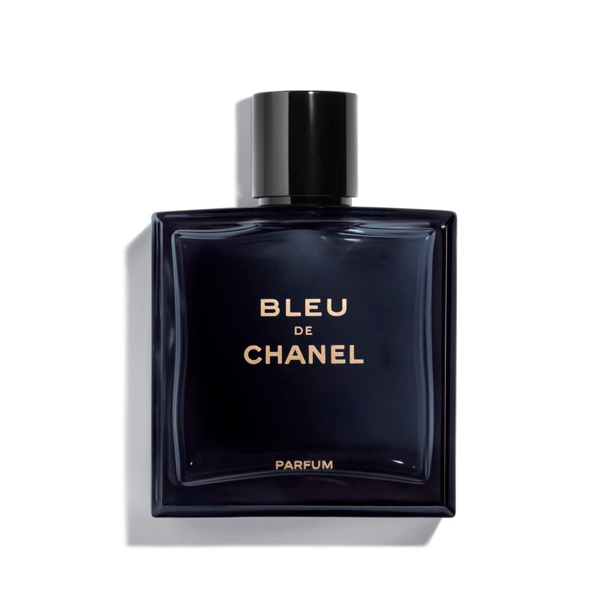

CHANEL BLEU

BLEU PARFUM / Blue de Chanel Perfume
The aromatic woody blue de Chanel symbolizes masculine freedom.
Packed in an enigmatic blue bottle, experience a powerful fragrance that transcends time and is loved and refuses to conform.
Blue de Chanel Quick Peng with a deeper and richer scent. It's a strong male scent that shows a sense of accomplishment and confidence.
History
Blue de Chanel is a scent for men who refuse to compromise with reality or follow the rules.
The scent of Blue de Sanelle represents the spirit of a man who chooses his destiny based on independence and determination.
Ingredient
Blue de Chanel Fast Peng is a deep and rich aromatic woody perfume. With intense freshness, it opens the door to fragrance,
followed by the rich and refined aroma of deep New Caledonian sandalwood, which adds depth to the aroma and leaves traces of soft and intense fragrance.
How to use
To experience a deeper and richer scent, spray Quick Peng directly to areas where your pulse beats, such as your neck and wrist.
For a long-lasting rich fragrance experience, we offer a full line of shaving and body products.